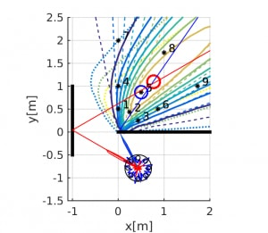

Projects
-

Non-Field-of-View Target Estimation
Introduce the capability of tracking and localizing human partners outside of the robots’ Field of View (FOV) to the co-robots for human-robot interaction.
-
Traffic Monitoring
A novel design of infrastructural traffic monitoring that performs vehicle counts, speed estimation, and vehicles classification by deploying three different approaches using infrared cameras and laser range finders.
-
The Mohamed Bin Zayed International Robotics Challenge (MBZIRC)
Sed lorem amet ipsum dolor et amet nullam consequat a feugiat consequat tempus veroeros sed consequat.
Publication
Journal:
Conference:
-
Non-Field-Of-View Sound Source Localization Using Diffraction and Reflection Signals [Accepted]
Kuya Takami, Hangxin Liu, Tomonari Furukawa, Kumon Makoto, Gamini Dissanayake
IEEE/RSJ International Conference on Intelligent Robots and Systems (IROS), 2016
-
Design of Highly Reliable Infrastructural Traffic Monitoring Using Laser and Vision Sensors
Hangxin Liu, Yi Tian, Tomonari Furukawa
ASME International Design Engineering Technical Conferences and Computers and Information in Engineering Conference (ASME IDETC), 2016
-
Recursive Bayesian estimation of NFOV target using diffraction and reflection signals
Kuya Takami, Hangxin Liu, Kumon Makoto, Tomonari Furukawa, Gamini Dissanayake
ISIF International Conference on Information Fusion (FUSION), 2016
Awards
-
Pratt Engineering Scholarship (Fall 2013, 2014, 2015)
$5000 each academic year from College of Engineering at Virginia Tech
-
Dean's Scholarship (Spring 2013)
$3000 each academic year from College of Engineering at Virginia Tech
-
Dean's List (Spring 2015, Fall 2015)
For GPA 3.4 or above
-
Dean's List with Distinction (Fall 2012~Fall 2014, Spring 2016)
For GPA 3.75 or above